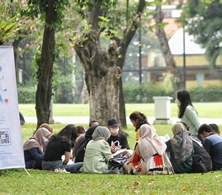
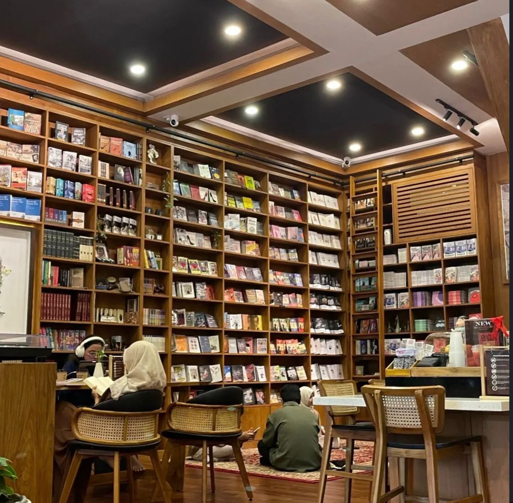
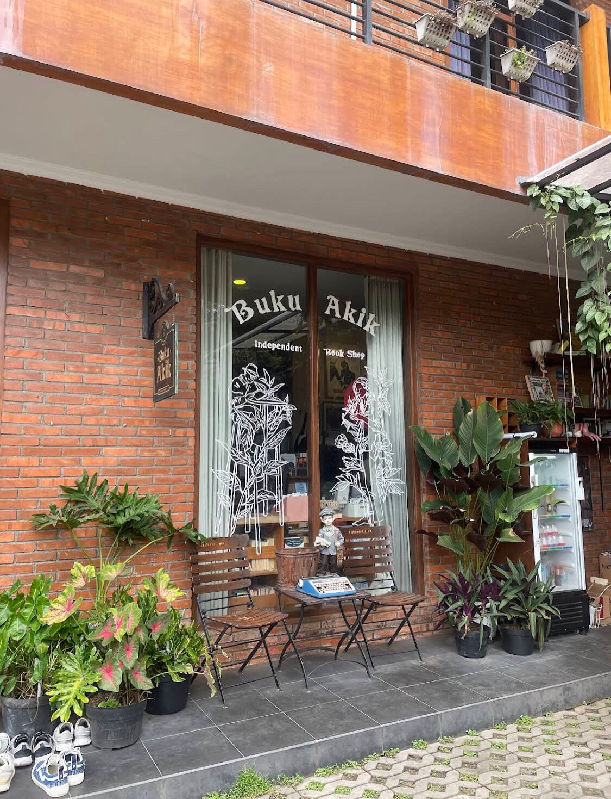
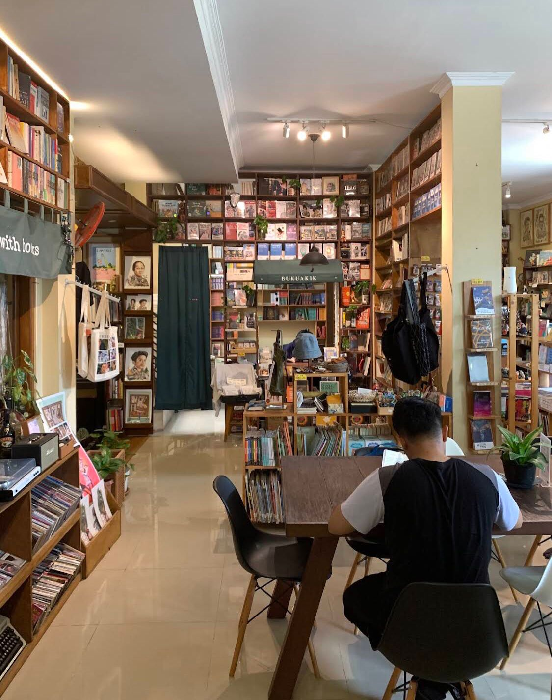
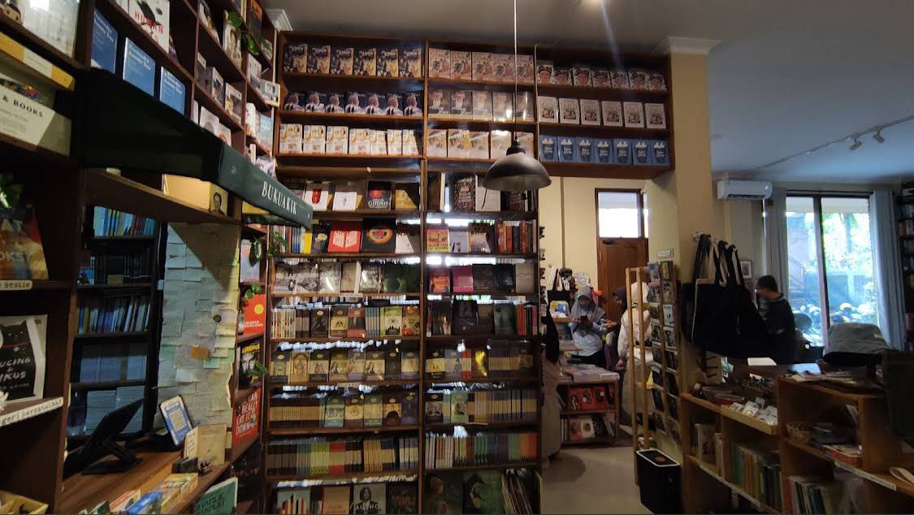
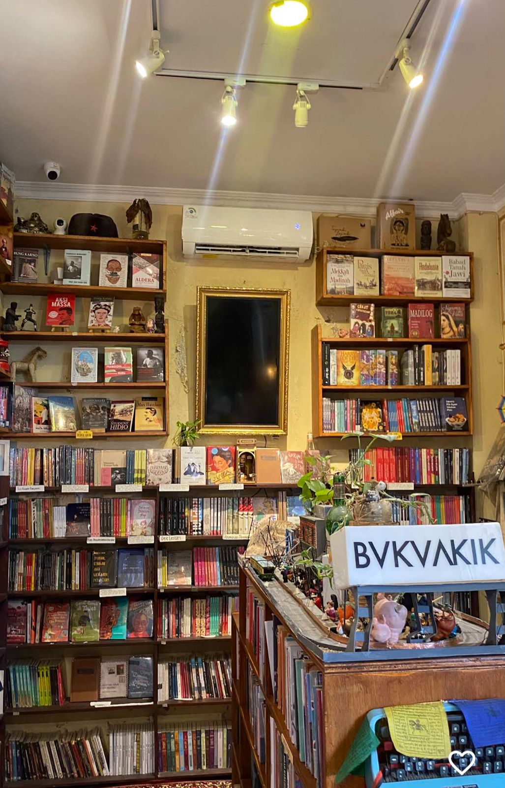

Galeri Perpustakaan
Perpustakaan Bara Aksara
Beranda
Tentang
Koleksi Buku
Layanan
Kontak
Galeri
Galeri Perpustakaan Bara Aksara
Kumpulan foto-foto ruangan, kegiatan, dan fasilitas perpustakaan.

Kegiatan Diskusi Buku

Rak koleksi buku klasik

Rak Koleksi buku fiksi

Rak Koleksi Referensi

Koleksi buku langka

Sudut Membaca